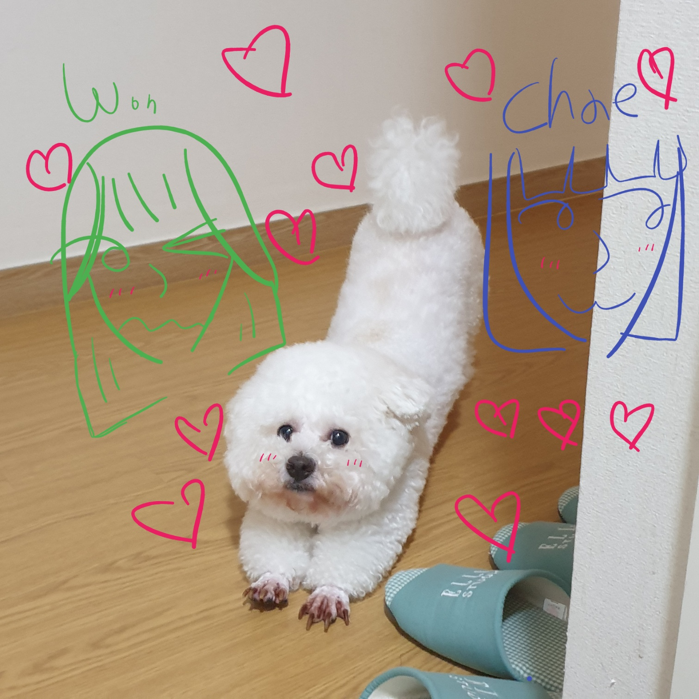
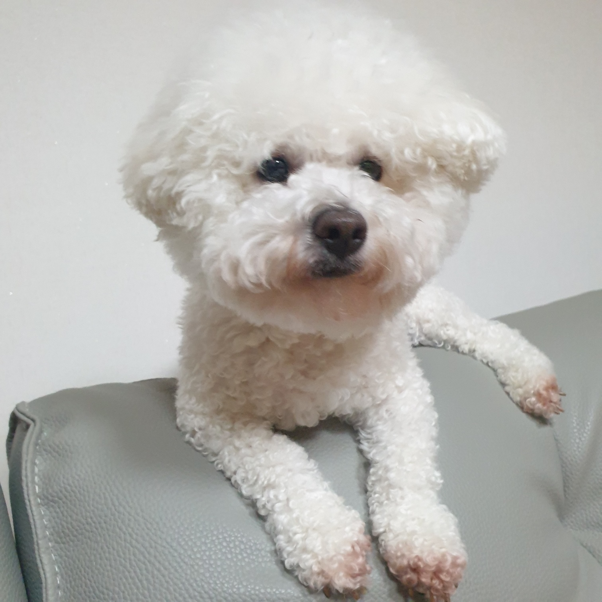
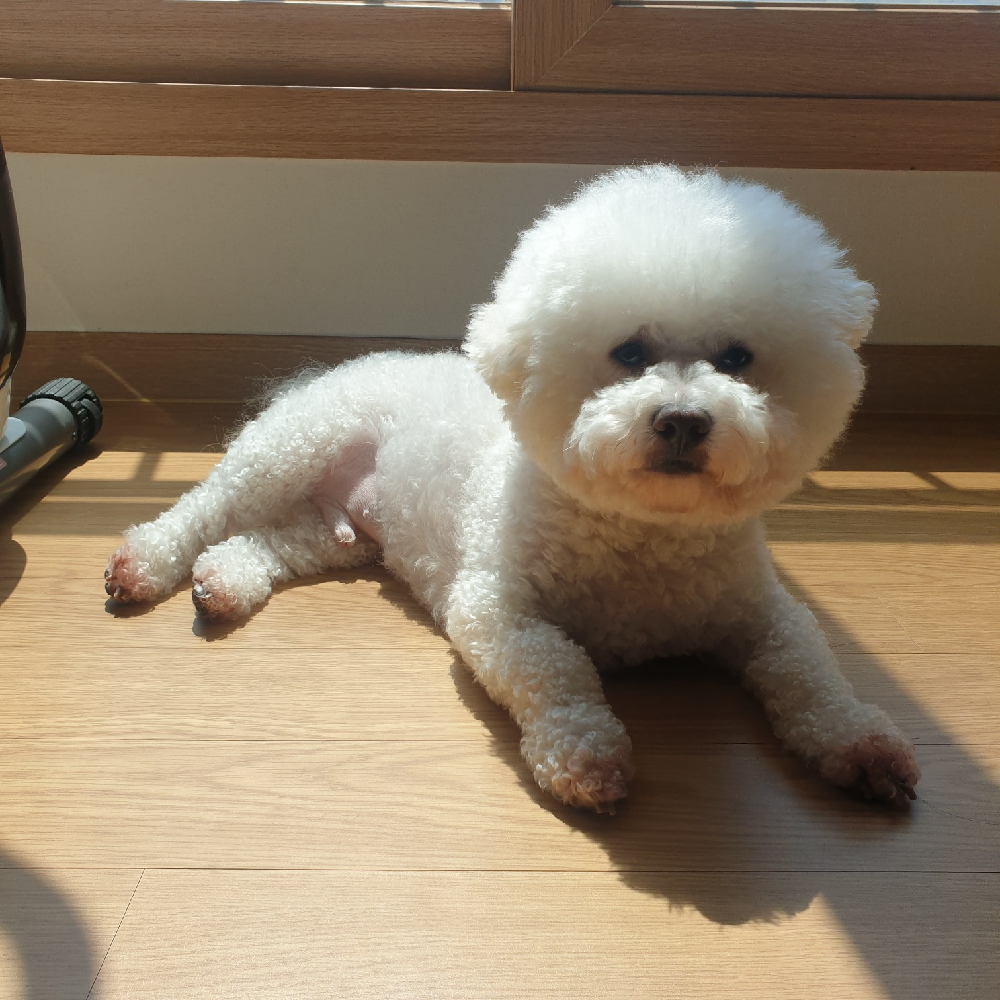
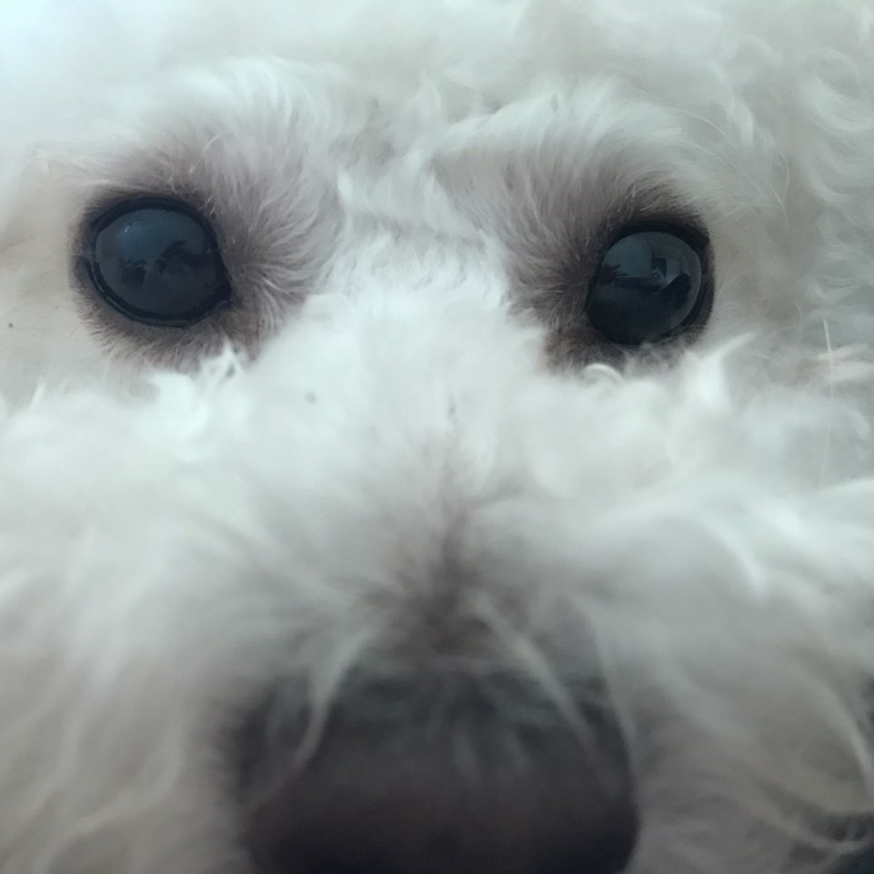

rue's archive
- dumplinghoho (a.k.a 만두 호~ 호~)

Q. Where is dumpling??
dumpling 'mandu' : 나 어딨게~??? 왕!
(만두가 숨은 곳을 '잘' 찾아보세요!)
- 빛 아래

- 그림자 위

- 책 위

- 숨기 시러ㅡㅅㅡ!!!

A. NONE OF THEM!!! mandu is in your mindㅡ.ㅡ
O
K
A
Y
??
dumpling 'mandu' : 니 맘 소게 잇다고ㅡ.ㅡ 그만 물어! 왕! 왕왕! 아님 너 문다ㅡㅡ^